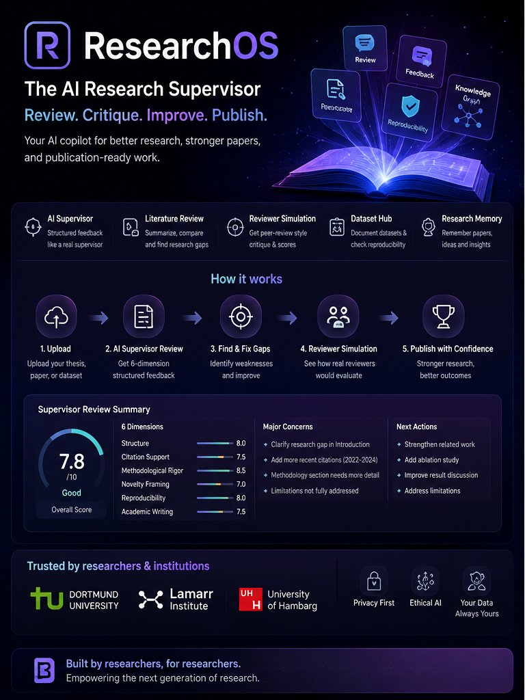
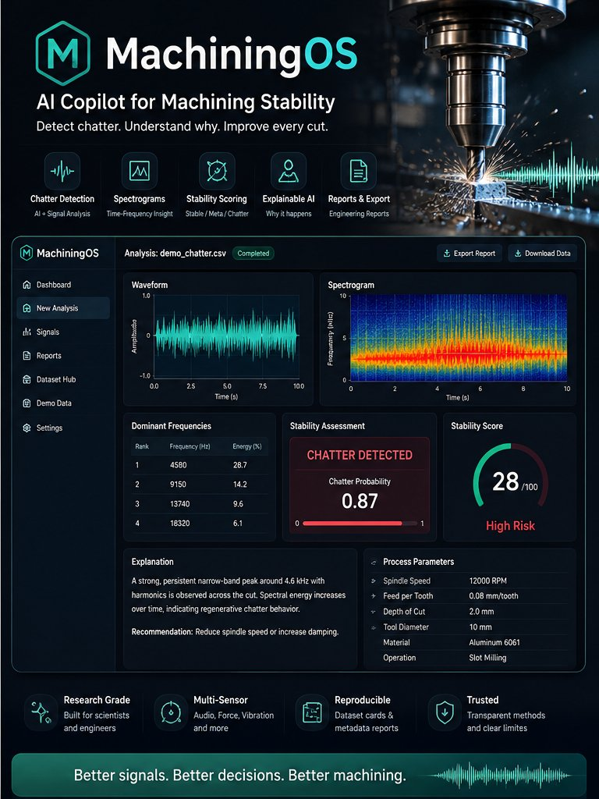

Research Identity
I am a Research Associate at TU Dortmund University (Chair of Virtual Machining) and the Lamarr Institute for Machine Learning and Artificial Intelligence. My research develops trustworthy and interpretable AI systems for intelligent manufacturing — with focus on machining process stability and intelligent manufacturing.
The broader research agenda aims to answer: How can AI systems reliably support machining decisions with transparent, physically-grounded reasoning?
🏆 Scholarship Awards
🏛️ Institutional Affiliations (10+)
Current Research Focus
Research on intelligent systems for machining process stability — combining domain expert knowledge, acoustic signal analysis, and machine learning to support data-driven manufacturing decisions.
Evaluation of acoustic sensor systems for CNC machining process monitoring — assessing suitability, signal fidelity, and cost-effectiveness for stability analysis applications.
Machine learning workflows for tool-condition monitoring — combining CNN architectures, Random Forest, regression models, and feature engineering pipelines. Research emphasis on explainability: which signal features actually predict wear, and can the model decisions be trusted by engineers?
Structural dynamics characterization of machining systems — including tool-spindle-workpiece dynamics — to support physical understanding of process stability and vibration behaviour.
Research Timeline
Research Software
Research software tools built alongside the academic work.


Python-based signal processing pipelines for machining process monitoring and reproducibility.
Student Supervision & Mentoring
Publications & Work in Progress
Active research with publication potential:
- Acoustic Monitoring for Machining Stability — sensor evaluation study
- Machining Stability Platform — annotation and analysis framework
- Machining Stability Benchmark — reproducible evaluation framework
- Explainable AI for Machining: Interpreting ML decisions in stability classification
Contact & Collaboration
Open to research collaborations in industrial AI, machining stability, and acoustic monitoring. Available for PhD supervision discussions, dataset collaborations, and joint research projects.